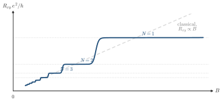

Advanced Quantum Materials 2027 · All lectures · Lecture notes
Session 4. Electrons in a Magnetic Field, Quantum Hall Effect and Landau Levels
4.6 Quantized Hall plateaus in experiment
When we sweep the magnetic field on a real 2DEG, we see this transition directly. At low field, before the quantum regime starts, the Hall resistance grows linearly with \(B\), which is the classical Hall effect of ordinary electromagnetism. When the field reaches the tesla range, a staircase of sharp plateaus appears in the Hall resistance instead. The precise field scale depends on the material and follows the spacing of the Landau levels that we derive below. When the field increases further, the cyclotron energy \(\hbar\omega_c\) grows, so fewer Landau levels stay below a fixed chemical potential. Each time the chemical potential goes past a Landau level, the number of filled levels \(N\) in (4.2) decreases by one, and the Hall resistance jumps to the next quantized plateau. The result for an ideal gas at fixed density is drawn in Schematic 4.1.

What is the Hall resistance on the plateau with \(N=2\) filled Landau levels, in units of \(h/e^2\)?
Show the answers
- A. ✗ False
This is false. The value \(h/e^2\approx 25.8\,\mathrm{k}\Omega\) is the plateau with \(N=1\). For \(N=2\) the resistance is \(12.9\,\mathrm{k}\Omega\).
- B. ✓ True
This is true. The Hall resistance is the inverse of the Hall conductance. With \(\sigma_{xy}=Ne^2/h\) we obtain \(R_{xy}=h/(Ne^2)\), which is \(1/2\) for \(N=2\).
- C. ✗ False
This is false. The value \(1/4\), which is \(6.45\,\mathrm{k}\Omega\), belongs to the plateau with \(N=4\) filled levels.
4.7 Coupling electrons to a magnetic field with minimal coupling and the Peierls substitution
To go beyond this phenomenology and derive the spectrum of the Landau levels, we first need to know how to include a magnetic field in a Hamiltonian. In classical physics, a magnetic field \(\mathbf{B} = \nabla\times\mathbf{A}\) enters the equations of motion through the canonical momentum,
\[\boldsymbol{\pi} = \mathbf{p} - e\mathbf{A}, \tag{4.3}\]
which replaces the ordinary momentum \(\mathbf{p}\) everywhere it appears, and when we compute the equations of motion that follow from it we recover the Lorentz force law. In this session we set the magnitude of the electron charge and the speed of light to one, as the slides do without saying it, and we keep only \(\hbar\) explicit where the spacing of the Landau levels needs it. The same replacement (4.3) works without changes in quantum mechanics, with \(\mathbf{p}\to-i\hbar\nabla\). Minimal coupling turns the free Hamiltonian \(p^2/2m\) into \(\pi^2/2m\), and in the same way it changes the Dirac Hamiltonian below.
There is one subtle point that we cannot avoid, which is that \(\mathbf{A}\) is never unique. Any change \(\mathbf{A}\to\mathbf{A}+\nabla\chi\) with a scalar function \(\chi\) gives the same physical field \(\mathbf{B}\), so we always have to choose a gauge. We will need two gauges, the Landau gauge and the symmetric gauge, and we will see both in Section 4.8. A related point is a bit against intuition. A uniform out-of-plane field does not break the in-plane translational symmetry of the physical system, but every choice of \(\mathbf{A}\) for this field breaks translational symmetry in a formal way, in one direction or in both. Which symmetry survives, and how much of it, is a choice of gauge and not a physical choice.
The minimal-coupling replacement (4.3) is the natural method for continuum models, which are Schrödinger or Dirac electrons, where we write and solve a differential equation directly. For a tight-binding model, which is written in real-space orbitals, the more natural method puts the dependence on the field into the wavefunctions and not into the Hamiltonian, with a local gauge transformation. In concrete terms, the hopping amplitude \(t_{ij}\) is by definition an overlap between the orbital wavefunctions at sites \(i\) and \(j\). When we include the vector potential in these wavefunctions, every hopping gets multiplied by a complex phase, which is equal to the line integral of \(\mathbf{A}\) between the two sites,
\[t_{ij} \;\longrightarrow\; t_{ij}\, \exp\!\left(i\int_{\mathbf{R}_j}^{\mathbf{R}_i} \mathbf{A}\cdot d\boldsymbol{\ell}\right), \tag{4.4}\]
and this is what is called the Peierls substitution. It is the tight-binding version of minimal coupling, and the two give the same physics, since at low energies the expansion of a tight-binding model with the Peierls substitution gives directly the continuum Hamiltonian with minimal coupling.
A gauge change \(\mathbf{A}\to\mathbf{A}+\nabla\chi\) changes the phase of every bond in (4.4). Which quantity does not change?
Show the answers
- A. ✗ False
This is false. Take \(\chi=\theta x/a\). Every bond along \(x\) gets the extra phase \(e^{i\theta}\), and \(\theta\) is arbitrary, so a single bond phase can be set to any value.
- B. ✗ False
This is false. Around a plaquette with corners \(0,1,2,3\) the added phases are \((\chi_1-\chi_0)+(\chi_2-\chi_1)+(\chi_3-\chi_2)+(\chi_0-\chi_3)=0\). The sum around the loop does not change.
- C. ✓ True
This is true. The sum of the phases around a loop is the flux through it, which is \(\mathbf{B}\) and not \(\mathbf{A}\). The electrons respond only to this flux.
Try it. In the cell with the Peierls phases, B = 0.02 is the flux through a plaquette in units of the flux quantum. Change it to 0.04 and compare the distance between the first two flat levels at the bottom of the band. It is roughly twice as large, in units of the hopping \(t\), as the linear growth of the cyclotron energy with the field predicts.